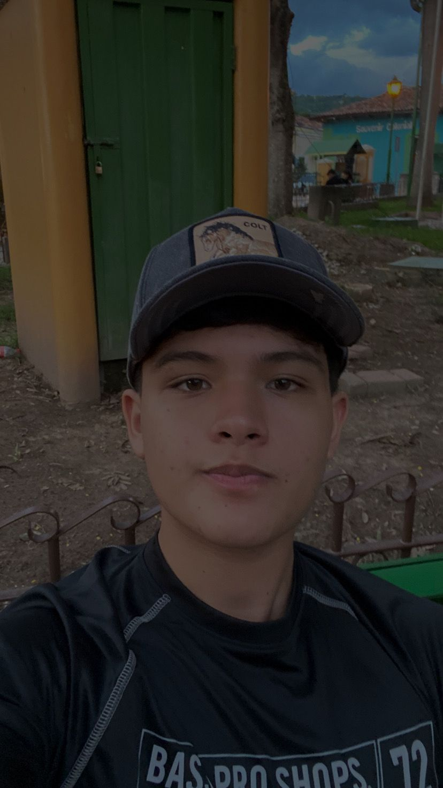

¡Conóceme!
Soy un adolescente que cursa el último año de Bachillerato en Informática. Me considero una persona deportiva y me gusta mucho hacer ejercicio; entrenar es parte importante de mi rutina y de mi estilo de vida saludable. Aunque trato de cuidarme, mi comida favorita es el pollo chuco y mi jugo favorito es el de naranja. No me gustan los refrescos, prefiero mantenerme hidratado de forma más sana.
Además de estudiar y entrenar, disfruto jugar UFC 5 en mis tiempos libres. Me gusta competir, mejorar mis habilidades y retarme a mí mismo, tanto en los videojuegos como en la vida real. Me esfuerzo por mantener un equilibrio entre mis estudios, el deporte y mis pasatiempos, siempre buscando ser una mejor versión de mí mismo. |
 |